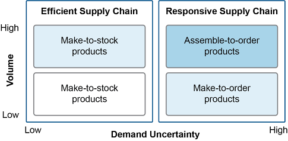

Supply chain master data include static files such as customer master files. Maintaining these master data is vital to the efficiency and effectiveness of supply chain networks. After discussing master data and their management, we address data acquisition and management, including automatic identification technologies and point-of sale systems, data analysis, and maintenance and cleansing of data.
Master Data and Their Management
Master data are a type of data (other types include unstructured data, transactional data, metadata, and hierarchical data) that describe the organization's core business elements, including customer data, supplier data, product or item data, engineering data, and logistics data. Each of these categories has many subcategories. Master data also include reference data, which are data that help place master data into categories, link them to transactional data, or relate them to external sources of information. Unlike transactional data, master data do not change frequently. They are static information (though they can be maintained). However, they are referenced in transactional data. Without accurate and timely data, no other aspect of supply chain management can be achieved.
Master data management (MDM) is a discipline that works alongside the IT discipline to coordinate the creating, updating, cleansing, and retiring of master data across an organization's systems or the systems of an extended set of entities to ensure stewardship, accuracy, consistency, completeness, and timeliness of those data among all parties. It involves governance (oversight), methodologies (process specifications and metrics), policies, procedures, and related technologies.
The concept of a life cycle can be applied to master data management to help organizations be holistic in how they govern and manage their data. There are numerous master data life cycle models, and the steps differ among them. Exhibit 2-19 shows one example of a master data life cycle.

In the plan phase of this cycle, the organization determines what master data it needs, how the data will be created and processed, and any policies, processes, procedures, and technologies that need to be in place for each type of master data. This step often can leverage a common data model, which is a best-practice model that offers standards for how organizational master data should be approached. Major database, enterprise resources planning, and cloud vendors offer such models. The last step, reassess, is a continuous improvement step where gaps in the master data management methodology or any feedback on specific issues are addressed. The steps that need to be done more frequently are reviewed next:
Create and process.
The expected use of the data should be a primary driver of the data to be collected. This step can include manual data entry, automated data capture through organizational devices or systems, or acquisition of data created outside the organization. Processing can include manual data entry restrictions or checks and automated formatting steps to get the data ready for their intended use.
Analyze, use, or transfer.
The data are put to their intended uses, which can include support for transactions, analysis to generate business insights, or analysis to find potential new uses of the data. Data can also be shared outside the organization. An audit trail is a vital control for this step. It tracks who made what changes and when they occurred. The audit trail itself needs very high security.
Maintain and store.
Maintenance and storage includes ensuring security in transit and in storage, cleansing the data (such as removing duplicate records), providing security, and backup and recovery processes.
Archive.
Data that are not needed for current transactions can be put into long-term storage if they need to be maintained for regulatory compliance or other reasons. The data are no longer subjected to regular maintenance but are secured.
Destroy or repurpose.
Data that are no longer needed and are slowing down the system or that must be deleted for legal or regulatory compliance (e.g., compliance with data privacy laws) need to be systematically purged from every system within which they reside. Destruction typically occurs mainly to data that has been archived for a time (such as to comply with records retention regulations). Repurposing involves finding a new use for a type of data.
Types of Master Data Important to Supply Chain Managers
The types of master data used will vary between department, company, supply chain, and industry. The most important master data for analysis include
Customer and supplier master files
Product/item/stock keeping unit (SKU) master files
Manufacturing master data such as bills of material or standard costs/time (a "should cost" amount or time period for things like direct materials or direct labor)
Purchase orders for raw material cost and spend analysis
Orders for demand analysis, customer profitability, and customer service
Inventory data for economic order quantity calculations (e.g., annual demand volume, unit value at cost, inventory carrying cost percentage, ordering cost, and partial or full load transportation costs), working capital, customer service costs, and obsolete or excess inventories
Logistics data, including shipment data for network optimization, transportation spend analysis, carrier performance analysis, and transportation rate negotiations
Engineering data.
Master data exist for every department and area of a company. For example, customer data include the customer master file. (Related transactional data include customer order history or point-of-sale data.) From these basic sources, one analysis might query sales by customer and customer location, further broken down into sales by pallets, cases, or pieces or by weight, cube, product lines, or frequency. Similar queries could be run for sales by SKU or other measures. Such information results in customer activity profiles, SKU activity profiles, customer by SKU profiles, and customer order profiles, each broken down by sales amounts and volume. From these data, managers can determine customer segments, better classify SKUs, set customer response measures, and determine an optimal customer service strategy for each customer segment.
For engineering data, a key data element is an effectivity date, or the date upon which an old engineering document is superseded by a newer version. The bill of materials (BOM) or product structure includes effectivity dates, both "from" and "to," to indicate when the information is valid. This allows engineering changes to be proactively scheduled. Material requirements planning (MRP) notes these dates and plans accordingly. In the event that a BOM is changed—for example, a new component with a new number is introduced—an engineering change notice can alert the MRP when to shift from the old part to the new part. This allows production to use up existing inventory first if this is feasible/allowed.
Creating Data
Cost-effective processes need to be set up to capture and transmit data to the database accurately. Once set up, data capture is primarily a tactical or operational problem, but the setup of methods, policies, and procedures for capturing data is a strategic decision.
Considerations in Data Capture
Specific considerations in data capture include the following:
Data volume. Depending on how sophisticated the company's data capture processes are to start with, the volume of data captured may vary. Incremental improvements may be the best policy, because each increase in the amount of data captured can immediately be put to use in improving the bottom line. An accurate inventory system is a good place to begin. Many companies have moved to cycle counting—counting inventory periodically, several times a year. Done correctly, this improves the accuracy of the inventory. Working with accounting, this can avoid the annual physical inventory counting.
Having partial data is better than having no data. Even if a company's strategic goal is to have complete visibility across the supply chain network, it has to start somewhere. Partial data can provide incremental improvements and the ability to see what data are necessary for the next improvement in analysis.
Capture at the source. When possible, capturing data at the source is far better than entering them later.
Data capture tools: manual versus passive. Passive or automatic data capture increases productivity, is more likely to occur every time, and is more likely to be accurate than manual processes.
Capture ancillary data when possible. In a networked supply chain, it can be difficult to know what data will be important. Data mining and decision support systems can find hidden patterns if enough data are available. If a particular type of data is deemed important in the future, it is many times more valuable if those data have been captured continuously since some point in the past. Systems design should acknowledge the desirability of capturing ancillary data.
However, as the term "big data" implies, organizations can become overwhelmed by too much data. More data than are needed may simply hinder analysis or hide the true indicators of change. Therefore, even when the additional data are stored, use cases for data should be developed to indicate how the extra data could help prior to their being included in metrics or analysis.
Real-time versus batch data. Engineering true real-time access to data can be many times more expensive than engineering near real-time access. Sometimes using near real-time data has no real impact on usefulness. For example, transmission of production counts each minute rather than each second does not make the data less useful and saves considerable expense. Oftentimes an organization has both a transactional system for real-time data checking as well as a reporting system for when near real-time or historical data are sufficient.
Data Capture Challenges and Possible Solutions
Fast-paced, hostile, or multilingual environments pose a particular challenge to accurate data capture:
- Fast-paced environments.
- Local management may be resistant to adding any steps that would slow a process down, so the best solution may be to incorporate hands-free data capture such as a barcode or radio frequency identification (RFID) reader. Package shipping companies use multiple readers from different angles so packages passing on conveyor belts can be quickly read.
- Hostile environments.
- Dangerous, noisy, hot, crowded, or otherwise physically hostile environments require special solutions. It should be determined where measurement is required in the process so that a minimum number of durable sensors can be used.
- Language or training issues.
- Employees who do not speak the same language as their managers or are illiterate or technically illiterate need simplified environments such as those that use barcode work cards with multilingual or pictographic instructions.
Data Capture Methods
Data capture methods include automatic identification and point-of-sale systems.
Automatic Identification Systems
📖 ASCM Definition — automatic identification system (AIS):
AIDC devices have two key features: automatic classification and automatic identification. The automatic classification process applies the object's class to some of the numbers in an identifier, reducing the complexity of the numbering process and increasing identification speed. An item that can communicate its class allows optimization of groups of objects. In the warehouse, these items can be stored in optimal locations. In transportation, available shipping space can be planned. In retail, shelf space can be planned. Automatic identification means that unlike just having a serial number on an object, an AIDC device can communicate the object's presence.
Instead of trying to keep all product data on a tag, or even in a static database, the product data can be stored on the internet so that classification and identification occur on a network.
Global identification requires that the identifiers for objects be unique so the internet will yield only one match per item. Barcodes do this to a certain degree, but radio frequency identification (RFID) is more thorough. Both, however, can be used to update the transactional database when changes occur. Automatic identification systems are used in many places where the physical world must connect with the world of data, as shown in Exhibit 2-20.

The cost of purchasing, implementing, and maintaining automatic identification technologies should be offset by the benefits, especially if paperwork can be eliminated. The movement from paper-intensive activities to automated data capture systems improves productivity. Workers spend less time looking for and processing paperwork, writing numbers, and entering data. These devices reduce errors by eliminating numeric transpositions, missing or incomplete information, and lost or damaged paperwork.
Barcode and RFID scanners can now be embedded or attached to cell phones for real-time data input at any location. Wireless POS devices with cellular technology can accept immediate customer payments. Handheld scanners allow workers to concentrate more on moving items. RFID devices are even better, because workers don't have to place items with their barcodes in a particular alignment.
These systems improve customer service levels by reducing stockouts, especially when dealing with promotional or advertised items. The inventory database is more accurate, and supply is matched more closely to demand, leading to added profits because fewer sales are lost and variability is reduced. Enriched product information also benefits the consumer because such data will be more easily available from multiple synchronized sources. Even consumer data can benefit, such as an affinity card showing a pattern of buying certain products in a supermarket on certain days.
Automated replenishment signals can occur when inventory is tracked accurately. Accurate inventory reduces shrinkage from employee theft, lost inventory, or spoiled goods and enables functions such as vendor-managed inventory. In other words, automated data capture significantly improves inventory visibility. Visibility and dynamically updated product data help plan space in warehouse and retail locations more effectively. Finally, quality assurance can be improved by tracking where problems have occurred.
The following content looks at automatic identification technologies including warehouse automation systems, barcodes and barcode scanners, RFID, smart cards, magnetic stripes, and vision systems.
Warehouse Automation Systems
Warehouse automation systems are physical devices that interface with warehouse management systems (WMS) to provide information to distribution center employees on how to pick or put away items while they are on the move. These devices may be handheld, hands-free, mounted on a forklift or other vehicle, or built into the warehouse floors or racks. The key benefit of these devices is that they can be integrated with optimizing applications to ensure employee efficiency. Hands-free devices are especially good because they do not hinder manual tasks.
Warehouse automation systems include the following:
- Wireless radio data terminal (RDT).
- This data interface device involves a display, an input mechanism such as a keyboard with special function keys, and either a barcode, an RFID reader, or both. The RDT receives commands from a WMS and directs the actions of the employee for picking or put-away.
- Synthesized voice.
- A WMS directs this hands-free synthesized voice system to tell an operator what to do. The operator may wear a microphone to indicate when a job is finished. These systems require little training.
- Pick-to-light.
- These systems highlight a path through the warehouse and/or an item to be picked using physical indicator lights or lit alphanumeric displays installed at each inventory location or on a carousel.
- Heads-up displays.
- Heads-up displays present a virtual image of the warehouse over the employee's actual view for hands-free direction.
Barcodes and Barcode Scanners
A barcode is a machine-readable code that identifies, at a minimum, the product manufacturer and the stock keeping unit (SKU). Some barcodes may also contain lot and batch information and/or a serial number. Barcodes assist in the correct identification of products and also operators/staff, store shelves, pallets, and pallet racks. For example, warehouse orders can be picked and placed in reusable baskets, each with a barcode. The operator scans the basket's code, and the warehouse system indicates what to put in the basket.
The barcode system is heavily integrated in all areas of the supply chain. It will continue to coexist with other methods of data scanning such as RFID because barcode labels are very inexpensive compared to RFID tags. Most RFID labels have a barcode on the outside of the tag for use with either system. RFID and barcodes can be complementary; when an RFID tag has interference, the barcode tag can be scanned.
Components of a barcode system include
Barcode printers
Barcode labels
Barcode readers (portable or stationary)
Hard-wired or radio frequency (RF) communications links between the barcode readers and an application (enterprise resources planning [ERP], transportation management system, WMS, or point-of-sale capture)
Applications to process the data collected.
Exhibit 2-21 shows a typical barcode label.

Barcode labels list data in a format of bars with intervening spaces of varying thickness. A reader shines lasers at the barcode and captures the reflection in an optical scanner. The scanner takes up to 100 looks at the code to measure the width of the black bars and the white spaces. Each group of black bars and white spaces represents a character (letter or number). Start and stop characters tell the scanner which direction it is reading from and allow the reader to read information omnidirectionally. Large industrial scanners can read barcodes in a wide viewing field for high-speed sorting. Exhibit 2-21 shows only a single character; a complete barcode would include a number of characters to identify the manufacturer, etc.
A very common barcode standard is the Universal Product Code (UPC), one type of which is shown in Exhibit 2-22, representing the number 123456789012. (A 12-digit number is the maximum information for this type.) This number is typically used to identify the manufacturer and SKU only; it does not normally identify a product by its serial number or other unique identifier. UPC codes are heavily used for checkout at cash registers.

There are a large number of other barcode standards, many of which do support identification down to a unique identifier. Some may use the 12-digit UPC code as the unique identifier. Once the UPC code is scanned, the unique identifier can be run through a WMS, TMS, or POS to link to and retrieve an abundance of data—SKU, date made, location in a warehouse, ERP system part number identifier, and all possible combinations of data captured in a data collection system. Most readers are designed to read multiple barcode formats.
A popular type of barcode is the 2D code. A 2D barcode can be scanned by mobile devices for automatic redirection to mobile-friendly websites. 2D barcodes include standards such as the QR (quick response) code and PDF417, a code found on the back of every U.S. driver's license. Exhibit 2-23 shows an example of a QR code. The chief advantage of such a code is that it stores data both horizontally and vertically rather than just in one direction, so more data can be stored in a small space without sacrificing scanner readability. 2D codes can identify an item by its serial number.

Barcodes are not smart tags. They are simply a hard-coded number or alphanumeric information that identifies a product, a website, or other information. When the type of barcode used does not identify a product down to its serial number, this can be an issue for product defects and quality assurance, especially for medicine and packaged foods. In some cases, one or more additional barcode blocks (not using UPC coding) carry the serial number, lot number, or other scannable data. In other cases, a single barcode (e.g., a 2D code) contains the manufacturer, SKU, and serial number.
Barcode data are often batch-processed, for example, when a mobile scanning device is placed back into its cradle, which is linked to the network. According to the ASCM Supply Chain Dictionary, batch processing as it relates to computer processing is "a computer technique in which transactions are accumulated and processed together or in a lot." For example, in a warehouse, the operator will be given a series of tasks to perform, and, when these tasks are finished, the operator will send the information to the system in a batch before receiving a new set of commands. While batch processing is low in cost, the advantages of a real-time barcode system include better data for salespersons quoting availability, on-the-fly correction of operator errors, and systems that can add or change tasks during a job.
RFID
📖 ASCM Definition — radio frequency identification (RFID):
A significant feature of RFID tags for supply chain applications is that the tags are available in a read/write configuration that allows tag and reader to communicate back and forth. The information on the tag can, in other words, be altered from a distance, unlike with barcodes. Applications for the supply chain could include updating the tag with its current location to provide a chain of custody for a pharmaceutical drug or dynamically changing the description of an item as value is added during manufacturing.
📖 ASCM Definition — EPC:
EPCglobal's EPC Generation 2 (Gen 2) interface protocols specify how information is communicated between tags and readers. EPC Gen 2 is recognized by the International Organization for Standardization (ISO) as the ISO 18000-6 class of standards.
The EPCglobal Network is a standards-based method of locating and verifying EPC codes. It creates an intelligent value chain for products. Trading partners use the web-based network to locate EPC codes and view the manufacturer's secure item website for additional product data.
EPCglobal tag data standards add security. For example, drug companies can use the network to track their products through the supply chain and guarantee that nothing was illicitly introduced, guard against counterfeits, and issue targeted product recalls. Although a counterfeiter could make a tag with someone else's company and product SKUs, only the EPCglobal's object naming service can issue tag headers. Because the product identifier is checked against this online registry, counterfeit tags would be immediately detected. Gen 2 also has password capabilities to lock portions of a tag.
There is a vast variety of types and costs of RFID tags. Simple and cheap tags are used to record an EPC, while more sophisticated tags are used as a mobile database (e.g., recording temperature, pressure). A chip can also control a process on an assembly line. Some tags are for single use only, while others can be updated and reused. Tag types include active, passive, and semipassive:
An active tag is "a radio frequency identification tag that broadcasts information and contains its own power source" (ASCM Supply Chain Dictionary). Such tags can transmit data to a reader at long ranges and are the most expensive type of tag. They are often used to tag containers or pallets.
A passive tag is "a radio frequency identification tag that does not send out data and is not self-powered" (ASCM Supply Chain Dictionary). The radio frequency energy from the reader temporarily powers the tag. Passive tags can transmit data at short range and are cheap if purchased in bulk. Readers must typically be installed at gateway entry and exit points, on equipment such as a forklift, or be handheld.
A semipassive tag is "a radio frequency identification tag that sends out data, is self-powered, and widens its range by harnessing power from the reader" (ASCM Supply Chain Dictionary).
Companies will likely use a mix of active and passive tags, for example, placing active tags on high-value assets and whole containers and passive tags on boxes full of merchandise. The cost of tags is a limiter in the expansion of RFID, since, in comparison, the cost of a barcode label is practically negligible.
Printers burn an RFID tag and may simultaneously print a label with a barcode. Printer cost, reliability, and throughput may be the most relevant issues.
Interference (a distorted radio signal) can be a problem with RFID. A signal can be affected by variables such as antenna size, reader power level, frequency used, and other radio frequency emissions (e.g., machinery white noise). Some liquids absorb reader/tag signals, and some metals reflect signals. Reading multiple boxes on a pallet is not foolproof; reading singular cases on a conveyor system is very reliable.
Common adjustments to improve read rates include
Placing readers in locations with less interference
Placing a buffer or shield between the tag and the interfering object
Adjusting the position and angle of the RFID antennae on readers
Changing reader or tag type/manufacturer to suit the facility or product.
The absence of human intervention in the process makes data acquisition with RFID extremely cheap and fast. However, many RFID users indicate that some human intervention is still needed to verify that the tags have been read, raising the cost and error rate of the system and reducing efficiency. Reader maintenance and testing must be included to verify promised reliability. For example, a major airline tested RFID and found that it could increase the accuracy of luggage read rates to more than 90 percent, but the airline would need to change how its operators loaded baggage into the metal luggage carts to get that accuracy level.
Because RFID generates vast amounts of data, the data must be brought into a usable state prior to sending them to ERP or analytical systems.
Before implementing RFID, companies should be at a high stage of supply chain maturity. Implementations at lower stages will lead to an inability to use the gathered information (i.e., all the costs and none of the benefits of RFID).
RFID's value comes in when process discipline cannot be advanced with other technologies and human interaction has reached the limit of its efficiency.
RFID's value comes in when process discipline cannot be advanced with other technologies and human interaction has reached the limit of its efficiency. For example, a refrigerated goods company saved 25 percent in energy costs by using RFID to make refrigerated doors at their warehouse open and close automatically at the arrival and departure of trucks.
The costs associated with RFID can be difficult to estimate because they include not just individual RFID tag costs but also infrastructure changes and capacity increases for filtering, storage, processing, and analysis.
A full implementation may be hard to justify, so a limited project may be the best way to add RFID, such as a plant area where items need careful tracking.
The business case should drive RFID selection. The organization should target a supply chain process that has sufficient room for improvement and will provide a strategic advantage, such as collaborative product life cycle management, continuous demand management, reduction of stockouts, asset management, fulfillment and distribution, aftermarket sales, or reducing counterfeiting or theft.
Other Types of AIDC Devices
Other types of AIDC devices include the following.
Smart cards. A smart card has an embedded microchip with a unique identifier. Companies give employees smart cards to regulate physical and computer access and create an automatic time log. Smart cards are also used for vehicle identification at tollbooths or in warehousing for a picking tour.
Magnetic stripes. Magnetic stripes are used for credit and ID cards to automate number entry. Data on the magnetic stripe can be changed. Because the stripe must be read by contact, it can't be used for high-speed sorting.
Vision systems. Vision systems use cameras along with computers to interpret the images. These systems are relatively expensive and can distinguish changes at moderate speeds with great accuracy in a controlled environment. A vision system may be used to identify incoming items that have only text labels.
Point-of-Sale Systems
📖 ASCM Definition — point-of-sale (POS):
These two terms provide a great deal of information about the benefits of capturing data at the point of sale. Transferring information from the POS to the organization's information systems in real time allows the organization to
Capture data on product SKU, price, promotion, and inventory
Replace a push system with a demand-pull system based on actual customer orders and improve sales forecasting
Deduct inventory from the books immediately at the time of sale
Immediately forward accounting information to finance
Collect information about individual customer purchasing habits (either through a credit card or through a voluntary affinity card program)
Reduce the bullwhip effect if the data are shared immediately throughout the supply chain
Reduce data errors by collecting data at the source rather than later entry
Update POS systems at reduced cost, simplifying returns, coupons, special orders, layaways, etc.
A retailer may, for example, send information from the point of sale to suppliers each time a customer purchases an item to trigger production or shipment of a replacement. Large retailers may summarize the POS results in a data warehouse and provide all vendors with access to it through a vendor web portal. Such portals may include an application programming interface (API) to enable automated retrieval of the data.
In addition to linking cash registers to POS data collection systems, field systems such as wireless credit card readers, wireless POS scanners, tablets, and cell phones can be used to collect POS data. Self-service POS terminals such as at a grocery store or an ATM also exist. POS data can be collected through manual entry or as part of a barcode or RFID system.
Many types of buyer-supplier partnerships, such as vendor-managed inventory, require that the retailer provide POS data to the supplier. Business portals allow individuals to see exception-based information and forecasts based on POS data. The data are presented on a dashboard that allows users to configure what items are tracked. For example, Walmart shares POS data by broadcasting to all suppliers on a security-restricted basis using their own portal network.
Consider the following case study of a company that has realized the benefits of capturing and communicating point-of-sale data in a retail setting.
A small company designs and creates high-quality running shoes and apparel. It distributes goods through three outlet stores. For several years they have had trouble managing their outlet store inventory because they have no way of viewing inventory levels. They have resorted to sending the same quantities of inventory to each outlet no matter what the current inventory is, resulting in large excess inventory at stores. They have also had great difficulty in changing prices. These changes have to be sent via messenger service.
Their problem is that their data are static but need to be dynamic and real-time. They decide to solve their issues by implementing a retail management system with real-time POS data transfer. The system allows them to view inventory levels at the outlet stores so they can optimize products by local demand. The company can determine what products are selling at what locations and customize shipments accordingly. Headquarters can also change prices dynamically at each location, saving the company several days worth of labor per month. The system reconciles sales reports with actual sales for better reporting at the store level. This reconciliation feature also saves the outlet stores time and money by allowing faster nightly shutdowns and price change reconciliations. The company is more profitable and efficient.
Analyzing Data
Analysis turns data into business information, or information that is actionable, relevant, reliable, and placed in context. Analysis should reveal the best way to allocate scarce resources. A holistic analysis of the extended supply chain should reveal the optimal use of assets for each partner. Analysis occurs at the strategic, tactical, and operational levels, such as determining the location and number of distribution centers or calculating which centers to ship certain goods from during seasonal demand fluctuations. Analytical systems should be flexible enough to enable shifts in strategies, such as weighing the pros and cons of moving from distributed warehouses to a centralized warehouse.
Collaboration with key supply chain partners is a primary goal of organizations wishing to reach more mature stages of supply chain development, and sharing the results of data analytics or sharing data with supply chain partners so they can do their own analytics are key ways to promote this maturity. Sharing data can help globally optimize the supply network, enable sharing both risks and rewards with partners, and promote collaborative forecasting and active visibility.
When analyzing data, both the data and the models used need to be validated. Some degree of data aggregation is usually also needed. After discussing these concepts, decision support systems, big data, and data analytics are addressed.
Model and Data Validation
When analyzing results, both the predictive model and the data used must be validated, or tested against actual results. The first step in analytical model validation is to put historical data into the model and see if the results are as expected. If they are, the model is run again using current data, and the output is compared with expected results for reasonableness. When either of the above validation tests returns unexpected or wildly inaccurate results, both the model and the data are explored to find errors, bugs, outlier exceptions, or incorrect or unrealistic assumptions.
If the results differ by too much, the model and/or the data must be modified until the model accurately predicts actual results within an acceptable margin of error. Then the model and the data are put to use in actual business decisions. They are, however, periodically reviewed to ensure that they continue to reflect actual usage.
Because models often use aggregated data, the amount of error related to the level of aggregation should be estimated. If the error is within limits, it is considered acceptable. Finally, if the model makes intuitive sense and the data are consistent with actual results or if any anomalies in the data can be fully explained, then the model is ready to be used.
Data Aggregation
Due to the large amount of data collected—especially in retail, where large numbers of different products are sold—data are usually aggregated, or grouped into like categories.
Aggregation is "the concept that pooling random variables reduces the relative variance of the resulting aggregated variable" (ASCM Supply Chain Dictionary). In other words, the peaks and valleys in the data are smoothed out when they are combined, which allows averages and trends to be more obvious. In addition to reducing variance, aggregation is useful because massive amounts of data can be difficult to interpret when viewed at a granular level. For example, sales by SKU by store will have a large amount of confusing variation. Looking at sales by SKU by region will reduce variation and provide better insights. Further aggregation could be done with meaningful groupings of SKUs per region (e.g., all sizes of the same shirt).
The aggregated data are used in data modeling and analysis, such as by using a decision support system.
Decision Support Systems
A decision support system (DSS) is "a computer system designed to assist managers in selecting and evaluating courses of action by providing a logical (usually quantitative) analysis of the relevant factors" (ASCM Supply Chain Dictionary). DSS is a broad term for any software application used to help management make better decisions. A DSS generates analytical models that are based on mathematical algorithms, simulations, or hybrids of the two. Analytical models are simplified versions of a real situation, event, or transaction. A good model will have just enough information to help guide a decision without including details that would confuse the issue. Models may not always be purely mathematical versions because a DSS may be needed to help management make tradeoffs between qualitative objectives.
As shown in Exhibit 2-24, basic DSS components include an input database, a set of data analysis tools, and a set of database and spreadsheet presentation tools to display results.

📖 ASCM Definition — data mining:
Data mining commonly uses a data warehouse (a batch-updated database kept separate from the transactional database for use in analytics) or a shared interorganizational database.
Presentation tools filter the massive data output of a DSS analysis into role-specific information using "dashboards" that allow users to customize the information to suit their needs. For example, a dashboard could show a marketing manager the simulated results of a sales campaign but omit manufacturing simulation results.
Input data to a DSS for supply chain management might include, among many other specific data items, the following:
- Static and semistatic data such as customer order history; locations of suppliers, warehouses, and retailers; weight; volume (cube); holding cost; and shelf life (maximum and minimum) of products
- Dynamic data, such as point-of-sale data and sales forecasts; current capacity and transportation costs to distribution centers; retailer inventory levels; delivery status; and product sales forecasts
- DSS queries, such as sales by customer, segment, or SKU; purchasing by supplier, SKU, etc.; on-hand inventory and inventory forecasts; orders by value, lines, units, etc.; and demand variability
Strategic-level DSS can afford to be detailed and relatively slow because the decisions are long-term and need to be performed only periodically. Such systems often use the most extensive historical data available. Tactical decisions require a balance between speed and sophistication. Operational DSS must be able to provide fast decisions and so are generally simpler models that use current data for short-term planning.
Big Data and Data Analytics
📖 ASCM Definition — big data:
"Big data" is a buzzword term that describes the massive amount of both unstructured and multistructured data that is hard to process using traditional database and software techniques. Big data comes from different sources—web, sales, customer contact, social media, mobile data, and so on. Many companies process millions of manual/automated transactions per day. A vast amount of data that can be used for numerous purposes is produced. Many frame the discussion of big data using volume (the amount of data), velocity (the speed of information generated and the flow of it through the supply chain), and variety (the kind of data available). However, the term may also refer to the technology that an organization requires to handle the large amounts of data.
Data analytics tools and big data are two elements that can help businesses identify problem areas within a supply chain before those areas actually do damage. Companies need to think about how they will use big data to improve their supply chain:
- Data collection.
- Deciding how much data to collect and how they will be analyzed.
- Technology usage.
- Separating insights from useless data and presenting the insights in a way that is instantly understandable.
- Leverage results.
- Incorporating insights into the decision-making process.
In a strategic example, in determining the optimal distribution network, data can be collected on customer, retail, distribution center, and manufacturing locations; product sales by weight and cube; special transportation requirements; and forecasted demand. In a tactical or operational example, two uses of big data are demand sensing and demand shaping. Demand sensing is used to detect changes in demand from consumers in near real time; demand shaping is then used to alter demand plans to reflect the best current information on demand.
Data acquisition and communication tools are methods of collecting, storing, and sharing data among areas in the organization and with members of the extended supply chain. The primary goal of data acquisition and use is to create a seamless link between all points of production, distribution, purchase, and service. This goal can be broken down into the following components.
Collecting information. Information should be collected at each point at which a good is handled or a service is rendered. Since these points occur within and between many companies, from raw materials companies to manufacturers and assemblers to distribution centers and retailers (plus transportation between each point), there are naturally many individual databases. This information may or may not be shared between supply chain partners.
Providing timely access to data. Data are considered timely if they are received by the relevant system or decision maker within the time needed to execute the relevant transaction or make the decision. Some data are needed instantaneously, while other data can be sent in batches or subjected to intermediate steps such as analytics and still be considered timely.
Controlling access to relevant data. Access to relevant data, especially data regarding the status of material, products, and services, is the basis for making efficient supply chain decisions. The goal of data access is to allow each information user access to a uniform set of role-specific data from any point of contact. For example, a sand supplier should get the same information about a customer's sandpaper sales or rejection rates whether inquiring by phone, ERP, or internet exchange. Likewise, regardless of the means used, the sand supplier should not see the sandpaper manufacturer's labor rates or profit margins.
Reducing visibility gaps. Depending on organizational strategy or the stage of supply chain development a company has achieved, data may or may not be shared. At the earliest stage, even internal information between divisions may not be shared, or it may have to pass through bottlenecks, making it less relevant when shared. At higher stages of development, the company may share data among its internal and perhaps even external partners in real time using straight-through processing (no reentry needed). Visibility implies not only tracking materials, products, and services but also providing active alerts to each affected party of upcoming actions and exceptions to planned events so alternate actions or methods can be devised.
Improving planning effectiveness. A forecast or model is only as good as the data used to create it. Since the sales forecast is the basis of almost all of the other budgets for a traditional manufacturing or service company, improving the data used in planning has a direct effect on a company's planning effectiveness and ultimately on profitability. Improving forecast accuracy is primarily a function of accurate, timely data, measuring and reducing estimate error, and product lead time.
Ensuring and maintaining data accuracy. Ensuring and maintaining data accuracy are critical to the perceived and actual usefulness of any technology system.
Data Maintenance
Ensuring and maintaining the accuracy of data is a major issue and an ongoing concern. Data collection must be as automated as possible; however, with or without humans in the process, data can become compromised or erroneous. In an extended supply chain there are many more potential sources of error.
Data errors can come from sources such as the following:
Each time data are manipulated (Software bugs can introduce errors.)
Numeric transpositions, typos, and missing or incomplete data
Older or not fully integrated databases with multiple versions of a record
Redundant databases in the network or different tags for the same objects
In addition, delays in data collection can mean that the data arrive too late to be relevant.
Ensuring data accuracy requires resources for validating the data and correcting errors. Companies should use multiple methods to reduce and prevent errors. Without accurate data, advanced analysis will be ineffective and transactional systems will be inefficient. Data accuracy is especially relevant for planning systems. For example, when a transportation management system calculates how to load trucks, if the cube and weight data are wrong or missing from even a small percentage of items to be shipped, the system could recommend overloading the trucks. If this occurs too frequently, workers and managers may stop trusting in the integrity of the system.
In another example, a customer could submit an address change, and the customer master data file is updated. However, if there is a separate shipping and billing address in the system, if the billing address is not also updated or is updated incorrectly, the customer may not receive the bill and could end up being delinquent by accident, be sent to collections, and so on. Even if the problem is eventually discovered and fixed, the customer could be lost permanently.
Improving Data Accuracy
A primary method of ensuring data accuracy is to institute consistent collection and data entry polices:
- Sharing POS and other transaction-specific data across the supply chain
- Collecting and transferring data in real time where feasible
- Completing data entry at the time and place of the event
- Use of industry-specific data accuracy standards (For example, GS1 Standards are used in the retail grocery supply chain.)
- Acquiring new software without improving the quality of the data will lead to poor return on investment for the software, possibly leading to distrust and abandonment of an otherwise useful system. A way to prevent this is to combine system upgrades with data cleansing and normalization initiatives.
📖 ASCM Definition — data cleansing:
📖 ASCM Definition — data normalization:
Cleansing, normalizing, and otherwise enhancing data become especially important when two or more databases are combined. Mergers are one occasion for combining databases.
The format of the information must also be considered. IT systems should present data in like terms as well as in terms that are relevant to users' needs. For example, when an intermediate customer is creating sandpaper, a sand supplier should be able to see the customer's demand for kilograms of sand and not sheets of sandpaper.
Maintaining Data Accuracy
Once a firm's database has been deemed acceptable after cleansing or other improvements, the firm must take steps to ensure that the data quality doesn't degrade over time. Steps to ensure data integrity include
Instituting role-based access policies, procedures, and software limits for adding, deleting, and modifying information
Investing in data maintenance/continuous improvement process training for current and future users.